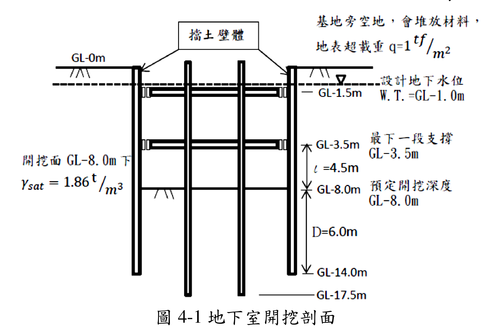
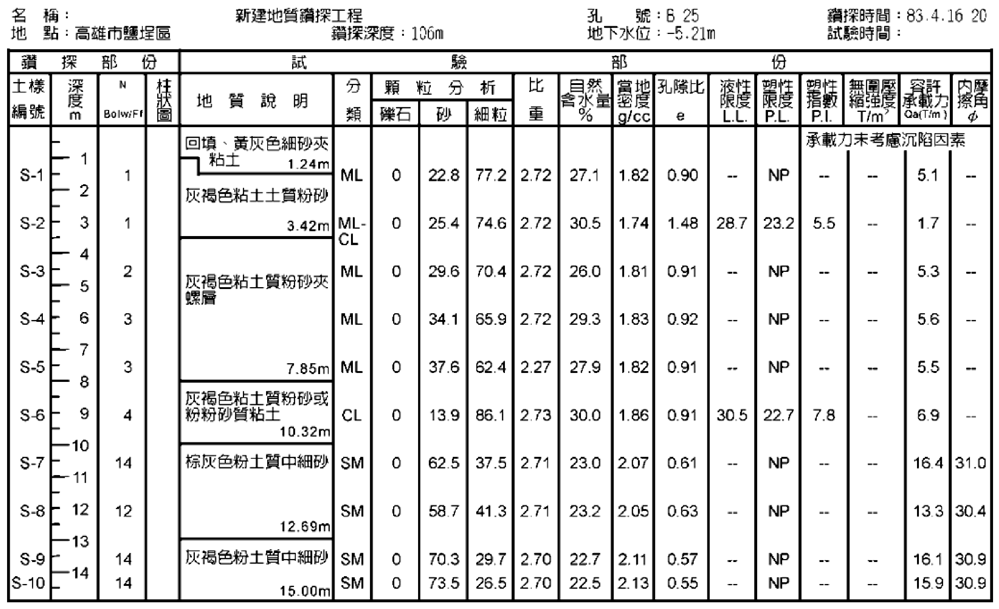
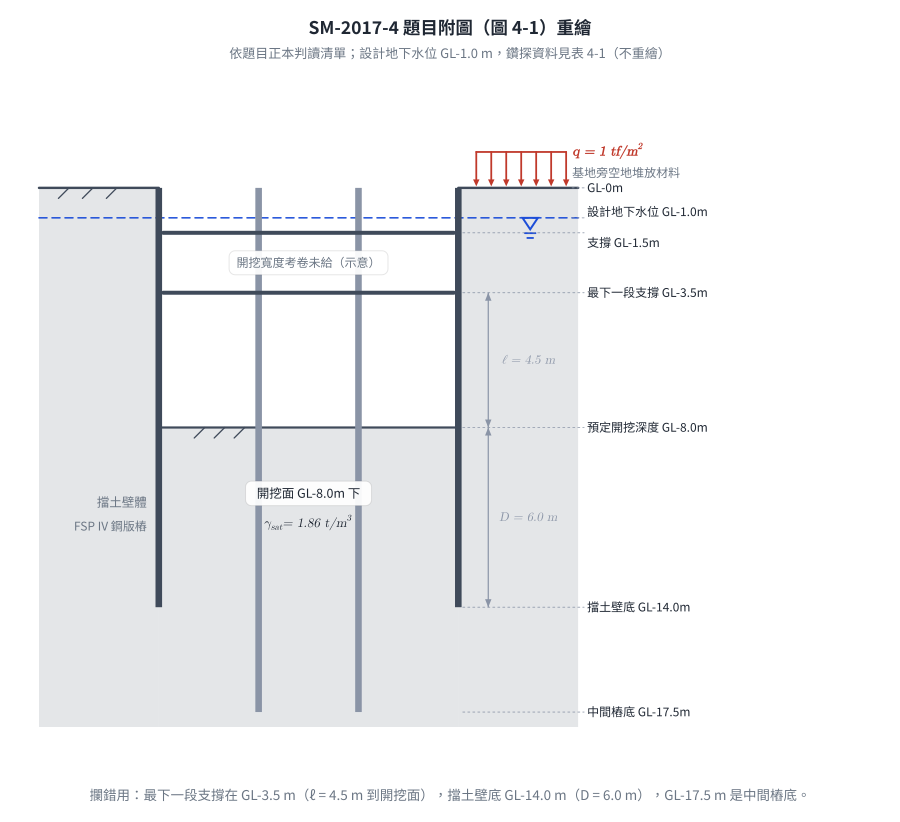
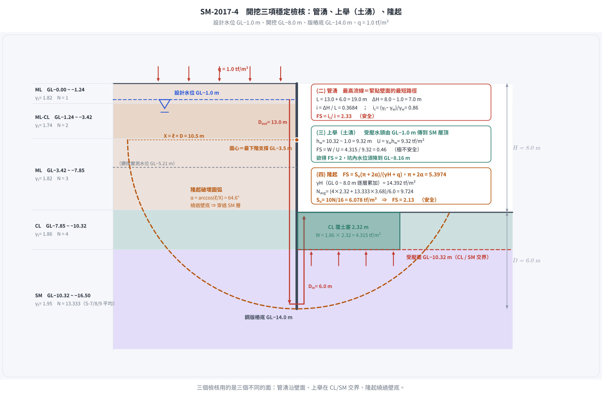
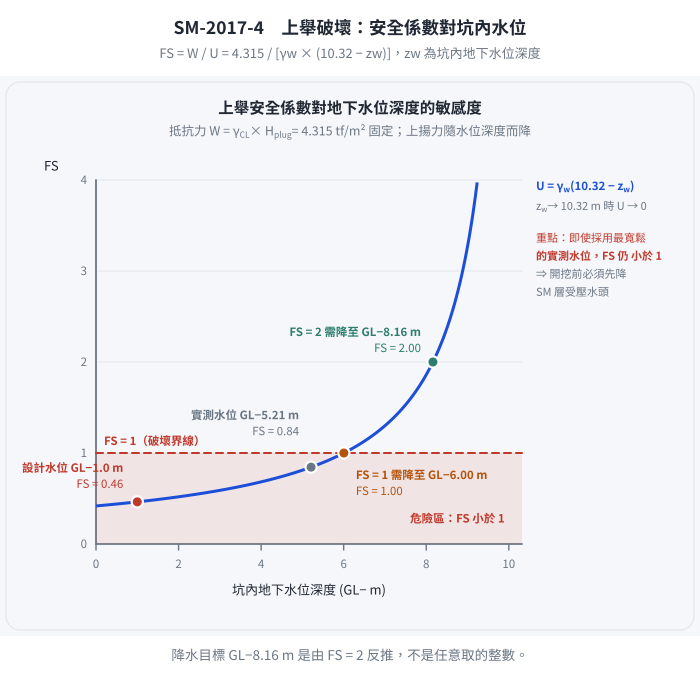
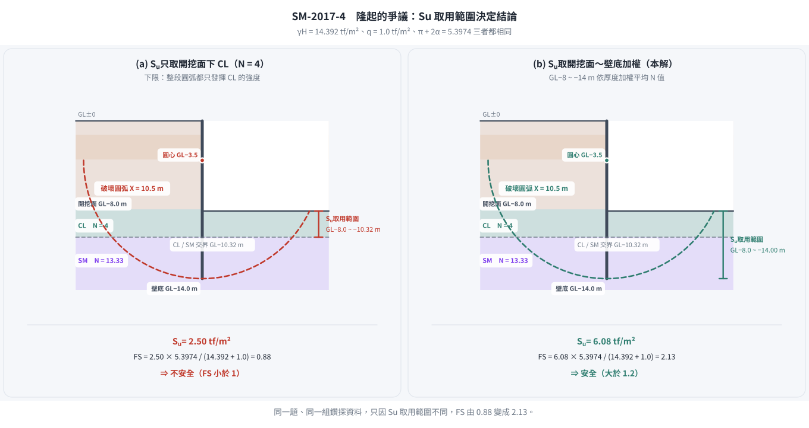

📄 題目正本：考卷原文・附圖・判讀清單（已確認）
SM-2017-4 題目正本
本檔只記錄考卷上寫了什麼、圖上畫了什麼，不含任何解法。解析見同資料夾
SM-2017-4.md。
判讀清單已確認（凍結）；本檔原則上不再修改（改動須回考卷原圖並記 log）。
| 項目 | 內容 |
|---|---|
| 考卷 | raw/exams/SM-2017_土壤力學與基礎設計.pdf 第 3 頁（第三頁），第四題 |
| 考年 | 民國 106 年（2017） |
| 配分 | 45 分（㈠5＋5、㈡10、㈢5＋10、㈣10） |
| 附圖 | SM-2017-4-fig-3.png（圖 4-1 地下室開挖剖面）、SM-2017-4-fig-4.png（表 4-1 鑽探報告）（2026-11-15 由考卷重新擷取 500 dpi）；既有 SM-2017-4-fig-1.png、SM-2017-4-fig-2.png 為同兩張圖，都帶滑鼠游標，保留不刪 |
| 判讀狀態 | 已確認（2026-11-15 關卡一：使用者授權依建議判讀確認；⚠ 待使用者複核：判讀 #1 隆起公式 α 的定義；轉錄 2026-11-15；PyMuPDF 110 dpi 全頁目視，附圖與附表為內嵌點陣影像（1024 px 寬），500 dpi 放大目視；PDF 文字層核對逐字原文；盲讀後才比對既有解析） |
1. 考卷原文（逐字）
四、某地下室開挖剖面，如圖 4-1 所示，其鑽探報告如表 4-1 所示，開工前之施工計畫為研擬施工之安全，請分析以下問題：
（註：1. 本案鑽探報告為公制，故請依公制計算，$\gamma_w = 1\ tf/m^2$
2. 基地旁為空地，會堆放材料，地表超載重 $q = 1\ tf/m^2$）
㈠擋土壁使用打擊式 FSP IV 鋼版樁（15.0 m 長，打至 GL-14.0 m），打樁時是否會振動、液化損鄰，請說明打擊式鋼版樁與土壤 N 值特性與深度之關係。（5 分）若施工時為避免打樁振動、液化損鄰，應做那些應變措施？（5 分）
㈡設計地下水位在 GL-1.0 m，請以擋土壁最高流線分析管湧安全係數為多少？（10 分）（$FS = \dfrac{i_c}{i}$、$i_c = \dfrac{\gamma_{sub}}{\gamma_w}$）
㈢設計地下水位在 GL-1.0 m，請分析上舉破壞（土湧）安全係數為多少？（5 分）又在 FS=2 之下，為防止發生上舉破壞則基坑內地下水位應降至 GL-？m。（10 分）
㈣土壤短期不排水剪力強度 $S_u = \dfrac{10N}{16}$（Terzaghi & Peck 1959）（本案砂土、粘土皆可用），請分析隆起之安全係數為多少？（10 分）（$FS = \dfrac{S_u\times(\pi+2\alpha)}{\gamma\times H+q}$）
（$\gamma_w$ 的單位考卷印成 tf/m²，照考卷原文。）
2. 考卷給的公式、附表與參數
- 考卷給的公式：管湧 $FS = i_c/i$、$i_c = \gamma_{sub}/\gamma_w$；不排水強度 $S_u = 10N/16$（Terzaghi & Peck 1959；砂土、粘土皆可用）；隆起 $FS = S_u(\pi+2\alpha)/(\gamma H+q)$。
- 註：$\gamma_w$ = 1 tf/m²（照錄，應為 tf/m³）；地表超載 $q$ = 1 tf/m²。
- 圖 4-1：GL-0m 地表；設計地下水位 W.T. = GL-1.0 m；支撐在 GL-1.5 m、GL-3.5 m（最下一段支撐）；預定開挖深度 GL-8.0 m；$\ell$ = 4.5 m（GL-3.5～GL-8.0）；$D$ = 6.0 m（GL-8.0～GL-14.0，擋土壁底）；GL-17.5 m（中間兩支樁底）；開挖面 GL-8.0 m 下 $\gamma_{sat}$ = 1.86 t/m³；基地旁超載 $q$ = 1 tf/m²。
- 表 4-1 鑽探報告（照錄）：名稱：（空白）；地點：高雄市鹽埕區；新建地質鑽探工程；鑽探深度：106m（照錄）；孔號：B 25；地下水位：-5.21m；鑽探時間：83.4.16 20（照錄）。
| 土樣 | 深度 m | N | 地質說明（層底深度） | 分類 | 礫石 | 砂 | 細粒 | 比重 | 自然含水量 % | 當地密度 g/cc | 孔隙比 e | L.L. | P.L. | P.I. | 無圍壓縮強度 T/m² | 容許承載力 Qa (T/m²) | 內摩擦角 φ |
|---|---|---|---|---|---|---|---|---|---|---|---|---|---|---|---|---|---|
| S-1 | 1.5 | 1 | 回填、黃灰色細砂夾粘土（1.24m）／灰褐色粘土土質粉砂 | ML | 0 | 22.8 | 77.2 | 2.72 | 27.1 | 1.82 | 0.90 | -- | NP | -- | -- | 5.1 | -- |
| S-2 | 3 | 1 | 灰褐色粘土土質粉砂（3.42m） | ML-CL | 0 | 25.4 | 74.6 | 2.72 | 30.5 | 1.74 | 1.48 | 28.7 | 23.2 | 5.5 | -- | 1.7 | -- |
| S-3 | 4.5 | 2 | 灰褐色粘土質粉砂夾螺層 | ML | 0 | 29.6 | 70.4 | 2.72 | 26.0 | 1.81 | 0.91 | -- | NP | -- | -- | 5.3 | -- |
| S-4 | 6 | 3 | 同上 | ML | 0 | 34.1 | 65.9 | 2.72 | 29.3 | 1.83 | 0.92 | -- | NP | -- | -- | 5.6 | -- |
| S-5 | 7.5 | 3 | 同上（7.85m） | ML | 0 | 37.6 | 62.4 | 2.27 | 27.9 | 1.82 | 0.91 | -- | NP | -- | -- | 5.5 | -- |
| S-6 | 9 | 4 | 灰褐色粘土質粉砂或粉粉砂質粘土（10.32m） | CL | 0 | 13.9 | 86.1 | 2.73 | 30.0 | 1.86 | 0.91 | 30.5 | 22.7 | 7.8 | -- | 6.9 | -- |
| S-7 | 10.5 | 14 | 棕灰色粉土質中細砂 | SM | 0 | 62.5 | 37.5 | 2.71 | 23.0 | 2.07 | 0.61 | -- | NP | -- | -- | 16.4 | 31.0 |
| S-8 | 12 | 12 | 同上（12.69m） | SM | 0 | 58.7 | 41.3 | 2.71 | 23.2 | 2.05 | 0.63 | -- | NP | -- | -- | 13.3 | 30.4 |
| S-9 | 13.5 | 14 | 灰褐色粉土質中細砂 | SM | 0 | 70.3 | 29.7 | 2.70 | 22.7 | 2.11 | 0.57 | -- | NP | -- | -- | 16.1 | 30.9 |
| S-10 | 14.5 | 14 | 同上（15.00m） | SM | 0 | 73.5 | 26.5 | 2.70 | 22.5 | 2.13 | 0.55 | -- | NP | -- | -- | 15.9 | 30.9 |
（表上「承載力未考慮沉陷因素」；深度欄為取樣位置在刻度尺上的約略深度，由刻度目讀；S-5 比重 2.27、S-2 孔隙比 1.48 照錄；地質說明欄的「同上」為本轉錄的簡寫，原表為合併儲存格。）
- 沒有給：隆起公式中 $\alpha$ 的定義、$H$ 的取法、用哪一個 N 值（或平均 N）、開挖寬度、最高流線的流徑長度定義、上舉檢核所指的不透水層。
- 卷首注意事項（第 1 頁）：㈠可以使用電子計算器。㈡不必抄題，作答時請將試題題號及答案依照順序寫在試卷上，於本試題上作答者，不予計分。㈢本科目除專門名詞或數理公式外，應使用本國文字作答。
3. 附圖


圖面文字照錄（圖 4-1）：擋土壁體、GL-0m、基地旁空地，會堆放材料，、地表超載重 q=1 tf/m2、設計地下水位 W.T. =GL-1.0m、GL-1.5m、GL-3.5m、最下一段支撐 GL-3.5m、ℓ =4.5m、GL-8.0m、預定開挖深度 GL-8.0m、開挖面 GL-8.0m 下 γsat = 1.86 t/m3、D=6.0m、GL-14.0m、GL-17.5m、圖 4-1 地下室開挖剖面。
4. 判讀清單
| # | 項目 | 判讀 | 圖上／題文依據 | 把握 |
|---|---|---|---|---|
| 1 | 隆起公式的 $\alpha$ | 考卷未定義；依公式形式 $S_u(\pi+2\alpha)$ 解讀為以最下一段支撐為圓心之滑動圓弧，開挖面以上弧段所對圓心角（rad），由 $\ell$ = 4.5 m 與圓弧半徑決定 | 題文㈣公式 | 不確定（解讀；影響答案，請確認）；使用者授權依建議確認；⚠ 待使用者複核 |
| 2 | 隆起用的 $S_u$ | $S_u = 10N/16$（tf/m²），考卷未說明用哪一深度的 N；解讀為滑動弧通過範圍（開挖面附近至擋土壁底）的 N 值 | 題文㈣、表 4-1 | 不確定（解讀；影響答案，請確認）；使用者授權依建議確認 |
| 3 | 上舉（土湧）檢核的不透水層 | 表 4-1 中 7.85～10.32 m 為 CL（S-6），其下 10.32 m 起為 SM 砂層；解讀為 CL 層底（GL-10.32 m）受下方砂層水壓上舉 | 表 4-1 地質說明與分類 | 不確定（解讀；影響答案，請確認）；使用者授權依建議確認 |
| 4 | 最高流線 | 沿擋土壁背側由設計水位 GL-1.0 m 向下到壁底 GL-14.0 m、再沿內側向上到開挖面 GL-8.0 m 的最短流徑 | 題文㈡「擋土壁最高流線」、圖 4-1 | 確定（解讀） |
| 5 | 開挖內水位（㈡） | 考卷未寫；解讀為開挖時抽降到開挖面 GL-8.0 m | 題文 | 確定（解讀） |
| 6 | 地下水位 | 設計 GL-1.0 m（鑽探記錄 -5.21 m 僅為鑽探時水位） | 題文㈡㈢、圖 4-1、表 4-1 | 確定 |
| 7 | 支撐 | GL-1.5 m、GL-3.5 m（最下一段）；$\ell$ = 4.5 m 為最下一段支撐到開挖面 | 圖 4-1 | 確定 |
| 8 | 擋土壁 | FSP IV 鋼版樁，長 15.0 m、打至 GL-14.0 m；貫入 $D$ = 6.0 m | 題文㈠、圖 4-1 | 確定 |
| 9 | 中間樁 | 圖上中間兩支樁打到 GL-17.5 m（題文未提） | 圖 4-1 | 確定 |
| 10 | 開挖面以下單位重 | $\gamma_{sat}$ = 1.86 t/m³（GL-8.0 m 以下） | 圖 4-1 左側註 | 確定 |
| 11 | 單位 | 依公制 tf、m 計算；$\gamma_w$ = 1（考卷單位印 tf/m²）、$q$ = 1 tf/m² | 題文註 | 確定 |
| 12 | N 值與深度 | S-1～S-5（GL-0～7.85 m）N = 1～3、S-6 N = 4、S-7～S-10（10.32 m 以下）N = 12～14 | 表 4-1 | 確定 |
| 13 | 考卷沒有給 | 開挖寬度、$\alpha$ 定義、$H$ 取值、N 值取法、上舉檢核的層位、開挖內水位 | 全題 | 確定 |
轉錄：2026-11-15（SM-U2-3 題目正本推廣・批 1）
確認：2026-11-15 使用者授權依建議判讀確認（SM-U2-3 題目正本推廣・批 1，關卡一；使用者指示「要我確認的請依你建議」）
考題編號：SM-2017-4
主分類： SM-U2-3 開挖之穩定性分析
副分類： SM-U1-2 土壤滲透、SM-U1-5 土壤強度特性與變形性
分析法： 混合
標籤： 開挖穩定性 管湧 臨界水力坡降 上舉破壞 基盤隆起 板樁 不排水剪力強度 安全係數
1. 題目（考卷原文見題目正本）
考卷原文、公式／附表、附圖與判讀清單（已確認）見
SM-2017-4-problem.md。本節只列解題時最容易讀錯的地方與本解使用的記號；題意以題目正本為準。

重繪自考卷圖 4-1，依題目正本判讀清單 #6–#10；攔下的判讀錯誤：ℓ = 4.5 m 由最下一段支撐量到開挖面、GL-17.5 m 是中間樁底而非擋土壁底。表 4-1 為鑽探資料表，不重繪。
常見誤讀
| 項目 | 正確判讀 | 常見誤讀 |
|---|---|---|
| 隆起公式 | 考卷印 $FS=\dfrac{S_u(\pi+2\alpha)}{\gamma H+q}$，有 $\alpha$（題目正本 §1、#1）；$\alpha$ 解讀為以最下一段支撐為圓心之滑動圓弧在開挖側的弧段角（rad）：$\alpha=\cos^{-1}(\ell/X)$，$X=\ell+D=10.5$ m（已確認；⚠ 待使用者複核） | 把 $2\alpha$ 當成「2）」的誤植而用 $\pi+2$（本解 §4㈣ 2026-11-15 勘誤前即如此，FS 誤為 2.03） |
| $\gamma_w$ 單位 | 考卷印 1 tf/m²（照錄），依公制 tf/m³ 計算（#11） | 不知考卷單位印錯 |
| N 值 | GL-10.32 m 以下 SM 層 N = 14、12、14、14，不是整層 14（#12） | 整層取 N = 14 |
| 上舉檢核層位 | CL 層（7.85～10.32 m）底受下方 SM 砂層水壓上舉（#3，已確認） | 以開挖面或擋土壁底為受壓面 |
| 最高流線 | 沿擋土壁背側由 GL-1.0 m 到壁底 GL-14.0 m、再沿內側到開挖面 GL-8.0 m（#4、#5） | 用直線距離或只算內側 |
本解記號： $i$、$i_c$ 平均／臨界水力坡降；$W$、$U$ 上舉檢核的覆土重與上揚水壓；$S_u=10N/16$（tf/m²）；$\alpha$ 隆起滑動圓弧角；$\ell$ 最下一段支撐到開挖面距離。
2. 考題核心精神與出題者意圖 (Core Concepts & Examiner's Intent)
本題綜合測驗開挖工程常見的各項穩定性與施工問題：
- 施工影響評估：測驗對土層特性（極軟弱、無塑性 ML 及高敏感 CL）與打擊式工法交互作用的理解。
- 管湧 (Piping)：測驗滲流路徑長度計算與臨界水力坡降的觀念。
- 上舉破壞 (Uplift/Heave)：測驗透水層上覆位不透水層時，自重與上揚水壓力的抗衡。
- 隆起 (Basal Heave)：測驗總應力法下，以 N 值推算 $S_u$ 並應用於底部隆起承載力公式的計算。
出題者刻意給定一個分層明顯的地質（淺層軟弱黏土/粉土，深層中等堅硬砂土），要求考生能根據破壞模式正確選取對應深度區間的土壤參數（如平均單位重、平均 N 值等）。
3. 解題戰略地圖與陷阱分析 (Strategic Roadmap & Trap Analysis)
- (一) 振動與液化評估：直接觀察 N 值與土壤分類。0~8m 的 ML 層 N=1~3 且 NP（無塑性），極易發生極大超孔隙水壓及液化現象。需提出低振動的替代工法（如靜壓植樁）。
- (二) 管湧分析：
- 陷阱：「最高流線」指的是緊貼擋土壁的最短滲流路徑。流徑長度 $L = D_{out} + D_{in} = (14-1) + (14-8) = 19 \text{ m}$。
- $i_c$ 需使用出水處（GL-8.0m 附近）之有效單位重。
- (三) 上舉破壞：
- 陷阱：需找出不透水層（CL）與透水層（SM）的交界。從鑽探表可知交界在 GL-10.32m。
- 抵抗力為 GL-8.0m 至 GL-10.32m 之 CL 覆土重；驅動力為 GL-10.32m 處之受壓水頭。
- (四) 隆起分析：
- 公式照考卷：$FS=S_u(\pi+2\alpha)/(\gamma H+q)$ 是以最下階支撐（GL-3.5 m）為圓心、半徑 $X$ 的圓弧力矩法，$\alpha=\cos^{-1}(\ell/X)$；$2\alpha$ 不是誤植。
- 上覆壓力 $\gamma H$ 需精確計算 GL-0~8.0m 各層土壤自重之加總平均。
- $S_u$ 需取擋土壁貫入深度（GL-8.0~14.0m）範圍內土層的加權平均 N 值來換算，因滑動面會經過此區域。
3.5 變數層次分析 (Variable Hierarchy Analysis)
最終目標
分別檢核打樁施工性、管湧安全係數、上舉破壞安全係數及所需降水深度、以及底部隆起安全係數。
本題關鍵公式（依計算順序）
- 管湧水力坡降：$i = \frac{\Delta H}{L}$
- 管湧安全係數：$FS = \frac{i_c}{\boxed{i}}$
- 上舉破壞抵抗力：$W = \Sigma (\gamma_t \times H_{plug})$
- 上舉破壞上揚力：$U = \gamma_w \times h_w$
- 隆起總覆土壓：$\sigma_v = \Sigma (\gamma_{t,i} \times h_i)$
- 隆起圓弧角：$\alpha = \cos^{-1}(\ell / X)$，$X = \ell + D$
- 隆起安全係數：$FS = \frac{\boxed{S_u} \times (\pi + 2\boxed{\alpha})}{\boxed{\sigma_v} + q}$
L1：題目直接給定
| 符號 | 數值 | 說明 |
|---|---|---|
| $H$ | 8.0 m | 預定開挖深度 |
| $D_{tip}$ | 14.0 m | 鋼版樁打設深度 |
| $q$ | 1.0 tf/m² | 地表超載重 |
| $\ell$ | 4.5 m | 最下一段支撐（GL-3.5 m）到開挖面 |
| $D$ | 6.0 m | 開挖面到擋土壁底 |
| $\text{GL}_{WT}$ | -1.0 m | 設計地下水位 |
L2：需知識點推導
管湧分析
| 符號 | 公式／來源 | 卡關? |
|---|---|---|
| $L$ | $L = (14.0 - 1.0) + (14.0 - 8.0)$ | |
| $\Delta H$ | $\Delta H = 8.0 - 1.0$ | |
| $i$ | $i = \Delta H / L$ | |
| $i_c$ | $i_c = (\gamma_{t} - \gamma_w) / \gamma_w$ (取底面土層) | |
上舉破壞分析
| 符號 | 公式／來源 | 卡關? |
|---|---|---|
| $H_{plug}$ | $H_{plug} = 10.32 - 8.0$ (CL層剩餘厚度) | |
| $W$ | $W = \gamma_{CL} \times H_{plug}$ | |
| $h_w$ | $h_w = 10.32 - 1.0$ (SM層頂部之水頭) | |
| $U$ | $U = \gamma_w \times h_w$ | |
隆起分析
| 符號 | 公式／來源 | 卡關? |
|---|---|---|
| $\gamma H$ | $\Sigma_{0}^{8.0} (\gamma_{t,i} \times h_i)$ | |
| $N_{avg}$ | 深度 8.0~14.0m 之 N 值加權平均 | |
| $S_u$ | $S_u = 10 \times N_{avg} / 16$ | |
| $\alpha$ | $X=\ell+D=10.5$ m，$\alpha=\cos^{-1}(\ell/X)$ | |
L3：深層知識（不懂就卡住）
| 知識點 | 說明 | 卡關? |
|---|---|---|
| 擋土壁最高流線 | 指緊貼擋土壁兩側的最短滲流路徑，決定了平均最大水力坡降。 | |
| 上舉破壞地層判定 | 必須從鑽探報告判別何處為不透水層（CL）與透水層（SM）的交界，以此作為受壓面。 | |
| 隆起圓弧力矩法 | 考卷式 $S_u(\pi+2\alpha)$ 來自 $M_r=S_uX^2(\pi/2+\alpha)$、$M_d=(\gamma H+q)X^2/2$；不是 Prandtl 的 $N_c=\pi+2$。 | |
| 隆起區間平均參數 | 基礎隆起破壞面會向下延伸至版樁底部附近，故 $S_u$ 應取開挖面至樁底的加權平均。 |
4. 步驟化詳細計算過程 (Step-by-Step Detailed Calculation)
(一) 施工影響與應變措施
1. 振動與液化損鄰評估：
由鑽探報告（表 4-1）可知，GL-0m ~ GL-10.32m 地層主要為粉土（ML）及黏土（CL），且 N 值極低（N=1~4），含水量高（26~30.5%），屬於極軟弱且具高敏感性之土壤。
特別在深度 0~8m 的 ML 層，其塑性指數標示為 NP（無塑性），這類疏鬆且無塑性的粉土在打擊式鋼版樁的強烈動態振動下，極易發生液化或產生極大的超孔隙水壓，導致土壤承載力瞬間喪失；周邊軟弱黏土亦會因擠壓而產生側向變形及後續的壓密沉陷。
深度 GL-10.32m 以下雖為中等堅硬之 SM（N=14），但上部軟弱層的反應已足以造成嚴重的損鄰事件。
結論：打擊式鋼版樁會產生嚴重振動，極可能導致液化與損鄰。
2. 應變措施：
為避免損鄰，應採取以下措施：
- 工法變更：將「打擊式」改為「靜壓植樁工法（Silent Piler）」，以無振動、無噪音方式壓入鋼版樁。若經費允許，可改用剛度更大、振動更小的地下連續壁或 SMW 工法。
- 輔助工法：若堅持使用鋼版樁，應搭配「預鑽孔」或「水沖法」以降低打擊阻力與振動能量。
- 監測系統：施工前落實鄰房現況鑑定，並密集配置沉陷觀測點、傾斜管、以及水壓計以嚴密監控施工影響。
(二) 管湧安全係數

圖 1 三個檢核用的是三個不同的面。攔的是「用同一個深度或同一組參數做完三題」：管湧沿壁面（$L = 13 + 6 = 19 \text{ m}$）、上舉在 CL/SM 交界（$\text{GL}-10.32 \text{ m}$，與開挖面差 $2.32 \text{ m}$）、隆起以最下階支撐為圓心、半徑 $10.5 \text{ m}$ 的圓弧繞過壁底（$S_u$ 取 $\text{GL}-8.0 \sim -14.0 \text{ m}$）；找錯面，三個安全係數就全錯。
(二) 管湧安全係數
依題意，使用「最高流線」（緊貼擋土壁之最短路徑）進行分析。
- 擋土壁外側水位：GL-1.0 m
- 開挖面水位：GL-8.0 m
-
擋土壁底端：GL-14.0 m
-
計算滲流路徑長度 ($L$) 與水頭差 ($\Delta H$)：
外側下行路徑 $D_{out} = 14.0 - 1.0 = 13.0 \text{ m}$
內側上行路徑 $D_{in} = 14.0 - 8.0 = 6.0 \text{ m}$
總滲流路徑 $L = D_{out} + D_{in} = 13.0 + 6.0 = 19.0 \text{ m}$
總水頭差 $\Delta H = 8.0 - 1.0 = 7.0 \text{ m}$
平均水力坡降 $i = \frac{\Delta H}{L} = \frac{7.0}{19.0} = 0.3684$ -
計算臨界水力坡降 ($i_c$)：
出水點（開挖面 GL-8.0m 附近）土壤為 CL（深度 7.85~10.32m），其 $\gamma_t = 1.86 \text{ tf/m}^3$。
$\gamma_{sub} = \gamma_t - \gamma_w = 1.86 - 1.0 = 0.86 \text{ tf/m}^3$
$i_c = \frac{\gamma_{sub}}{\gamma_w} = \frac{0.86}{1.0} = 0.86$ -
計算安全係數 ($FS$)：
$$ FS = \frac{i_c}{i} = \frac{0.86}{0.3684} = 2.334 $$
答：管湧安全係數為 $\boxed{2.33}$。
(三) 上舉破壞（土湧）安全係數與降水設計
上舉破壞檢核面上方為不透水層，下方為受壓透水層。
查鑽探報告，GL-7.85~10.32m 為 CL（黏土，不透水），GL-10.32m 以下為 SM（砂土，透水）。因此上舉受壓面在 GL-10.32 m 處。
- 分析上舉破壞安全係數：
- 抵抗力 (Downward weight $W$)：為開挖面 (GL-8.0m) 至受壓面 (GL-10.32m) 間之土重。
$H_{plug} = 10.32 - 8.0 = 2.32 \text{ m}$
$W = \gamma_{CL} \times H_{plug} = 1.86 \times 2.32 = 4.315 \text{ tf/m}^2$ - 上揚力 (Uplift pressure $U$)：由 GL-1.0m 的設計地下水位連通至 SM 層產生。
SM層頂部之水頭 $h_w = 10.32 - 1.0 = 9.32 \text{ m}$
$U = \gamma_w \times h_w = 1.0 \times 9.32 = 9.32 \text{ tf/m}^2$ -
安全係數 $FS$：
$$ FS = \frac{W}{U} = \frac{4.315}{9.32} = 0.463 $$
答：上舉破壞安全係數為 $\boxed{0.46}$（極不安全）。 -
計算 FS=2 之降水深度：
- 目標 $FS = 2.0 = \frac{W}{U_{req}}$
- 容許上揚力 $U_{req} = \frac{W}{2.0} = \frac{4.315}{2.0} = 2.1575 \text{ tf/m}^2$
- 對應之受壓水頭 $h_{req} = \frac{U_{req}}{\gamma_w} = 2.1575 \text{ m}$
- 水位高程應降至受壓面上方 $2.1575 \text{ m}$ 處：
降水後地下水位深度 $= 10.32 - 2.1575 = 8.1625 \text{ m}$
答：為防止發生上舉破壞，基坑內（抽水井）地下水位應降至 $\boxed{\text{GL}-8.16 \text{ m}}$。

圖 2 降水高程是反推出來的，不是隨手取的整數。攔的是「用實測水位就沒事了」的僥倖：即使改用最寬鬆的 $\text{GL}-5.21 \text{ m}$，$FS$ 也只有 $0.84$，仍然小於 $1$；要達到 $FS = 2$ 必須降到 $\text{GL}-8.16 \text{ m}$——這正是題目把設計水位訂在 $\text{GL}-1.0 \text{ m}$ 的用意。
(四) 隆起之安全係數
公式（考卷給定）：$FS = \dfrac{S_u \times (\pi + 2\alpha)}{\gamma \times H + q}$
0. 公式的來源與 $\alpha$
考卷印的是 $2\alpha$（2026-11-15 回考卷 400 dpi 目視確認），不是誤植。此式是以最下一段支撐（GL-3.5 m）為圓心、半徑 $X$ 的圓弧滑動面力矩法（現行建築物基礎構造設計規範 8.8.2 的底面隆起檢核同型）：
- 抵抗力矩：背側由圓心水平線往下 $\pi/2$、開挖側由圓心正下方往上到開挖面 $\alpha$，$M_r = X\int S_u\,ds = S_u X^2\left(\tfrac{\pi}{2}+\alpha\right)$
- 傾覆力矩：背側寬 $X$ 的土重加超載 $(\gamma H+q)X$，力臂 $X/2$，$M_d = (\gamma H+q)X^2/2$
- 相除得 $FS = M_r/M_d = S_u(\pi+2\alpha)/(\gamma H+q)$
圓弧通過擋土壁底：$X = \ell + D = 4.5 + 6.0 = 10.5 \text{ m}$；開挖面在圓心下方 $\ell$ 處，$\cos\alpha = \ell/X$：
$$\alpha = \cos^{-1}\frac{4.5}{10.5} = 64.62^\circ = 1.1279 \text{ rad},\qquad \pi + 2\alpha = 5.3974$$
（$\alpha$ 的定義考卷未給，依題目正本 #1 已確認的讀法；⚠ 待使用者複核。）
-
計算開挖面以上總平均覆土壓力 ($\gamma H$)：
根據各深度之 $\gamma_t$ 累加計算 (GL-0~8.0m)： -
0.00~1.24m (ML): $1.24 \times 1.82 = 2.257$
- 1.24~3.42m (ML-CL): $2.18 \times 1.74 = 3.793$
- 3.42~7.85m (ML): 取平均 $\gamma_t = (1.81+1.83+1.82)/3 = 1.82$
$4.43 \times 1.82 = 8.063$ -
7.85~8.00m (CL): $0.15 \times 1.86 = 0.279$
總上覆壓力 $\gamma H = 2.257 + 3.793 + 8.063 + 0.279 = 14.392 \text{ tf/m}^2$ -
計算開挖面以下之平均不排水剪力強度 ($S_u$)：
依題目正本 #2，取滑動弧通過的開挖面至擋土壁底端（GL-8.0~14.0m），依厚度計算加權平均 N 值。
N 值須逐個試驗值讀取，不可整層取同一個數——鑽探報告在 10.32~14.00 m 之間有三個試驗值：
S-7（$\approx$10.5 m）$N=14$、S-8（$\approx$12 m）$N=12$、S-9（$\approx$13.5 m）$N=14$，平均 $13.333$。 -
$8.00 \sim 10.32 \text{ m}$（CL，$2.32 \text{ m}$ 厚）：$N = 4$（S-6）
- $10.32 \sim 14.00 \text{ m}$（SM，$3.68 \text{ m}$ 厚）：$N = (14+12+14)/3 = 13.333$
$$N_{avg} = \frac{4 \times 2.32 + 13.333 \times 3.68}{6.0} = \frac{9.28 + 49.07}{6.0} = 9.724$$
$$S_u = \frac{10 N_{avg}}{16} = \frac{10 \times 9.724}{16} = 6.078 \text{ tf/m}^2$$
- 計算隆起安全係數 ($FS$)：
超載 $q = 1 \text{ tf/m}^2$
$$ FS = \frac{S_u \times (\pi + 2\alpha)}{\gamma H + q} = \frac{6.078 \times 5.3974}{14.392 + 1} = \frac{32.805}{15.392} = 2.131 $$
答：隆起之安全係數為 $\boxed{2.13}$（大於現行規範 8.8.2 要求的 1.2，安全）。
（若把 SM 層一律當 $N = 14$，$S_u = 6.333$、$FS = 2.22$；差 $4\%$，不影響結論。
但 $S_u$ 的取用範圍才是真正會翻盤的爭議，見 §5。）
5. 關鍵爭議點與進階探討 (Critical Issues & Advanced Discussion)
- 隆起公式的 $2\alpha$（2026-11-15 勘誤）：考卷印的就是 $S_u(\pi+2\alpha)$，不是 $\pi+2$ 的誤植。它不是 Prandtl 承載力式（$N_c=\pi+2$），而是最下階支撐為圓心的圓弧力矩法（推導見 §4㈣ 第 0 步）。$\alpha$ 考卷未定義，本解依題目正本 #1 取 $\alpha=\cos^{-1}(\ell/X)$、$X=\ell+D=10.5$ m（⚠ 待使用者複核）。2026-11-15 前本解改用 $\pi+2$ 得 $FS=2.03$，比照考卷式低估約 5%，結論（安全）相同。現行規範 8.8.2 另要求在不同半徑 $X$ 中取最小 $FS$；本題 $X$ 取到壁底（$S_u$ 取用範圍與題目正本 #2 一致）。
- ⚠ 隆起 $S_u$ 的取用範圍：兩種取法差 2.5 倍，結論完全相反（本題最大的爭議點）
| 取法 | $S_u$ (tf/m²) | $FS$ | 結論 |
|---|---|---|---|
| 只取開挖面正下方的 CL（$N=4$，厚 $2.32$ m） | $2.50$ | $\mathbf{0.88}$ | 不安全 |
| 開挖面至壁底（$8 \sim 14$ m）加權平均（本解） | $6.08$ | $\mathbf{2.13}$ | 安全 |
| 沿整條圓弧（含背側開挖面以上 ML 段）依弧長加權，$\gamma$ 依密度分段（獨立盲解） | $6.18$ | $2.16$ | 安全 |
（三列都用 $\pi+2\alpha=5.3974$。）
兩者的差別在於破壞面到底穿不穿過下方的 SM 層。本解採後者，理由有二：
① 題目特別註明「本案砂土、粘土皆可用」這個 $S_u$ 相關式——若不打算把砂土納入平均，這句話沒有作用；
② 擋土壁貫入到 GL-14.0 m，隆起破壞面必須繞過壁底，勢必穿過 SM 層。
但軟弱的 CL 只有 $2.32$ m 厚，若破壞面被局限在這一薄層內（例如壁體剛度不足、
破壞先在坑底發生），$FS$ 就只剩 $0.88$。作答時應把兩個數字都列出來並說明取用理由，
這比直接寫一個 $2.13$ 有價值得多。

圖 3 同一組鑽探資料、兩個相反的結論。攔的是「只寫一個 $FS$ 就交卷」：分母完全相同，差別只在 $S_u$ 的取用範圍——若整段圓弧都只發揮 $2.32 \text{ m}$ 厚 CL 的強度，$FS$ 只剩 $0.88$。作答時應把兩個數字都列出並說明取用理由。
- ⚠ 設計水位 GL-1.0 m 與鑽探實測水位 GL-5.21 m 的落差：
鑽探報告表頭載明「地下水位：$-5.21$ m」，但題目要求以設計水位 GL-1.0 m 分析——
這是保守設計（考慮豐水期、鄰地補注、施工降水失效）的標準做法。若改以實測水位計算：
| 項目 | 設計水位 GL-1.0 m | 實測水位 GL-5.21 m |
|---|---|---|
| 管湧 $\Delta H$ / $L$ / $i$ | $7.0$ / $19.0$ / $0.3684$ | $2.79$ / $14.79$ / $0.1886$ |
| 管湧 $FS = i_c/i$ | $2.33$ | $4.56$ |
| 上舉 $U$ (tf/m²) | $9.32$ | $5.11$ |
| 上舉 $FS = W/U$ | $\mathbf{0.46}$ | $\mathbf{0.84}$ |
值得注意的是：即使用最寬鬆的實測水位，上舉安全係數仍然小於 1。
也就是說「開挖到 GL-8.0 m 前必須先降 SM 層的受壓水頭」這個結論，
不因水位假設而改變——這正是本題把設計水位訂在 GL-1.0 m 的用意。
- 混合地層的隆起檢核：傳統隆起（Basal Heave）多針對純軟弱黏土層。但本題特意聲明「砂土、粘土皆可用此 $S_u$ 轉換公式」，代表出題者希望考生突破單一土層的思維，計算破壞影響區（開挖底面至樁底）內的等效加權平均剪力強度來進行檢核。
- 上舉破壞的水位設定：本題計算指出 $FS=0.46$ 極其危險。實務上，開挖至此深度前，必定需先在坑內施打「深井（Deep Well）」抽排 SM 層的受壓地下水，確保坑底 CL 層不被沖毀。這也是第(三)子題要求算出「降水高程」的實務意義。
解析日期：見 wiki/log.md ｜ 圖解補繪：2026-08-29（向量 SVG，程式繪製，腳本 gen_SM-2017-4.py 可重跑；同名 2× PNG 供簡報／影片管線使用）
修正日期：2026-11-15（§1 改為指向題目正本 SM-2017-4-problem.md，重繪附圖 figs/SM-2017-4-fig-1-problem.svg；刪除 §1 把考卷隆起公式 π+2α 改寫為 π+2 的重述（§4㈣ 依此計算的部分待勘誤）；非勘誤）
修正日期：2026-11-15（FIX：隆起式依考卷 π+2α：㈣ 改照考卷原式 $FS=S_u(\pi+2\alpha)/(\gamma H+q)$，$\alpha=\cos^{-1}(\ell/X)$、$X=10.5$ m，FS 2.03 → 2.13、只取 CL 下限 0.84 → 0.88；更新 §1、§3、§3.5、§4㈣、§5 與圖 1、圖 3（重跑 gen_SM-2017-4.py）；依 wiki/queries/盲解比對-SM-U2-3-B1-2026-11-15.md；腳本 scripts/fixes/2026-11-15_fix_SM-2017-4_heave_alpha.py）